London, England — 1909
The Major Arcana (Art by Pamela Colman Smith)
Published in December 1909, the Rider-Waite-Smith (RWS) deck revolutionized card reading history. The Major Arcana lineup is reconfigured below into a structured 3-column research matrix.
| Cards 00 - 02 | ||
|---|---|---|
|
00 — The Fool 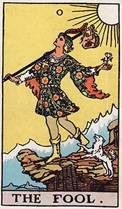 |
01 — The Magician 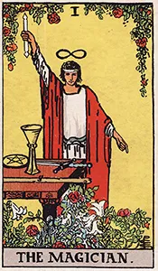 |
02 — The High Priestess 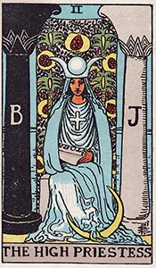 |
| Cards 03 - 05 | ||
|
03 — The Empress 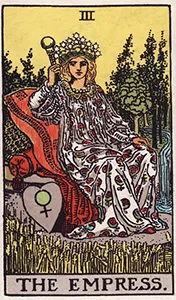 |
04 — The Emperor 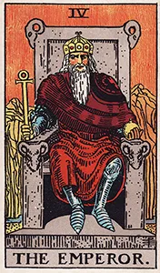 |
05 — The Hierophant 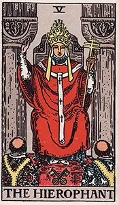 |
| Cards 06 - 08 | ||
|
06 — The Lovers |
07 — The Chariot 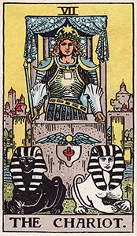 |
08 — Strength 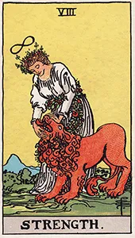 |
| Cards 09 - 11 | ||
|
09 — The Hermit 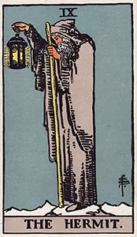 |
10 — Wheel of Fortune 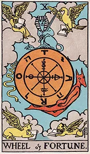 |
11 — Justice 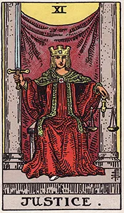 |
| Cards 12 - 14 | ||
|
12 — The Hanged Man 
|
13 — Death 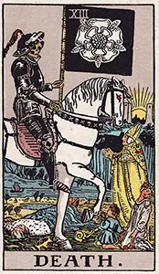 |
14 — Temperance |
| Cards 15 - 17 | ||
|
15 — The Devil |
16 — The Tower 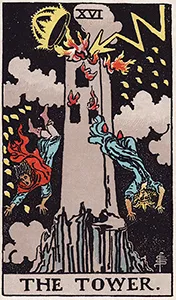 |
17 — The Star |
| Cards 18 - 20 | ||
|
18 — The Moon 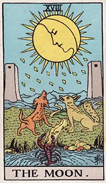 |
19 — The Sun |
20 — Judgement 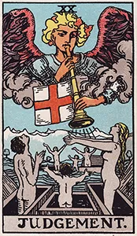 |
| Card 21 & Alignment | ||
|
21 — The World 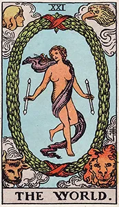 |
||